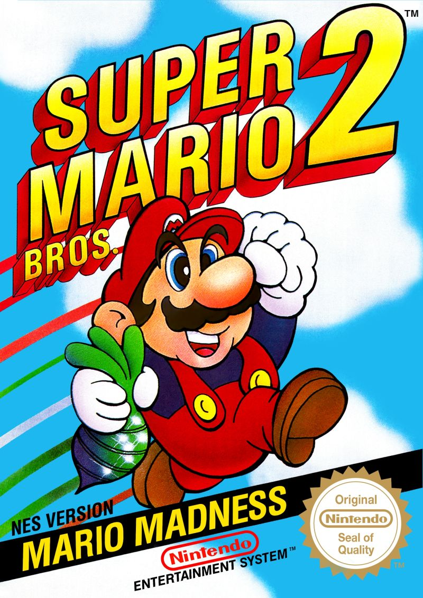
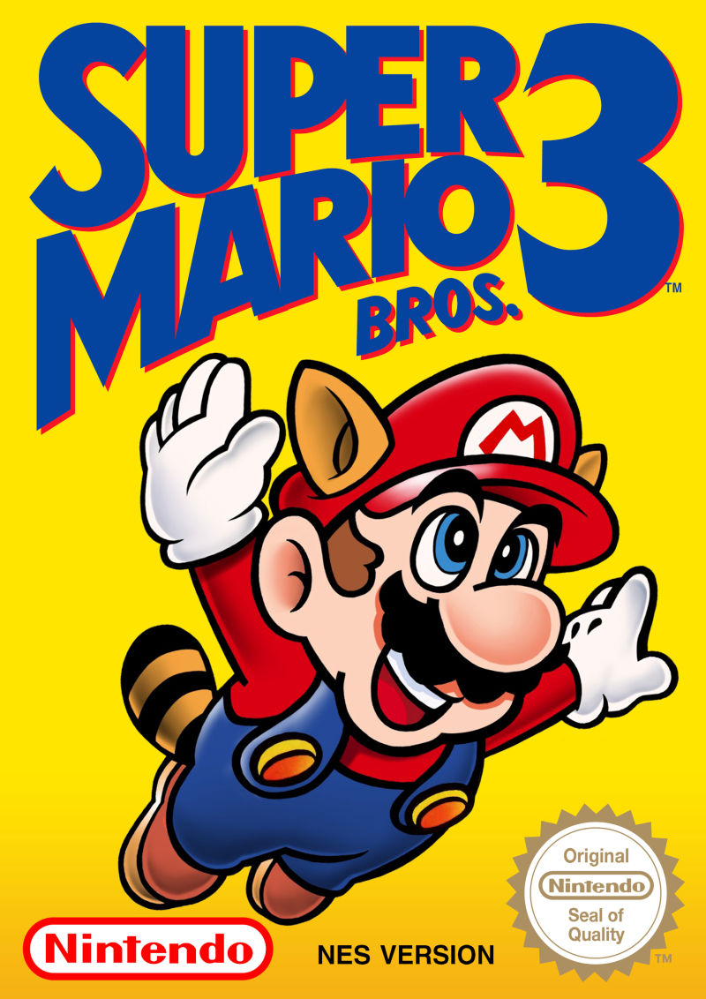
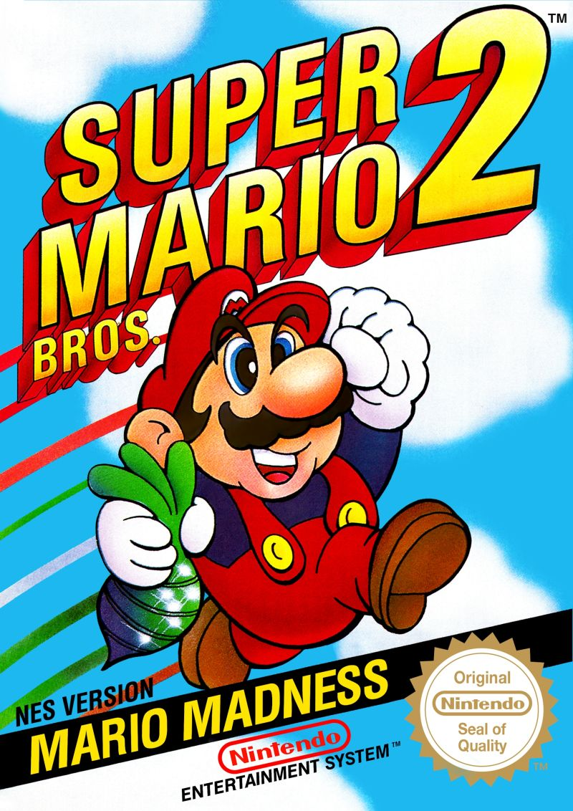
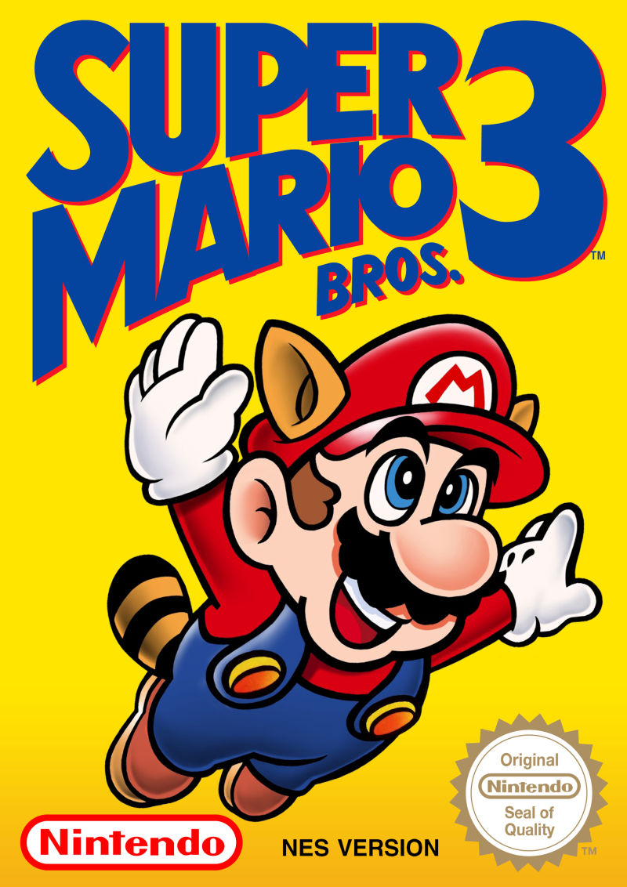
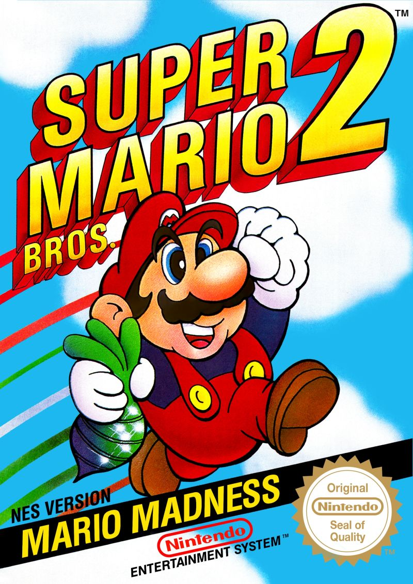
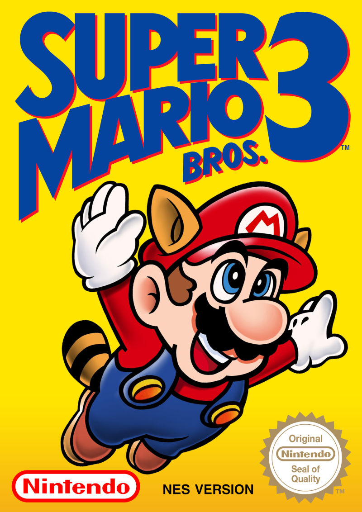

The Super Mario Bros. games launched on the Nintendo Entertainment System (NES). This was the first Nintendo home console known as the Famicom in Japan. This website provides information about each of the games, including gameplay footage.

